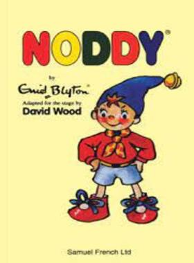
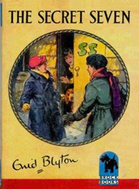
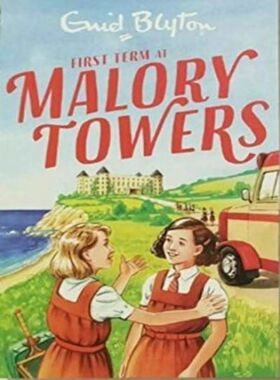
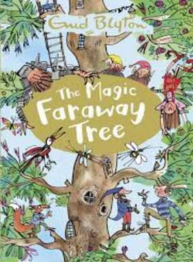

SUMMARY
SERIES
ABOUT AUTHOR
MORE

Famous Five
The Famous Five is a series of children's adventure novels and short stories written by English author Enid Blyton.
The first book, Five on a Treasure Island, was published in 1942.
The novels feature the adventures of a group of young children - Julian, Dick, Anne, Georgina (George) and her dog Timmy.
The vast majority of the stories take place in the children's school holidays.
Each time they meet they get caught up in an adventure, often involving criminals or lost treasure.
Sometimes the scene is set close to George's family home at Kirrin Cottage, such as the picturesque Kirrin Island, owned by George and her family in Kirrin Bay, George's own home and various other houses the children visit or stay in are hundreds of years old and often contain secret passages or smugglers' tunnels.
Watch The Series
About Author
Enid Mary Blyton (11 August 1897 - 28 November 1968) was an English children's writer, whose books have been worldwide bestsellers since the 1930s, selling more than 600 million copies.
Her books are still enormously popular and have been translated into 90 languages.
As of June 2018, Blyton held 4th place for the most translated author.
She wrote on a wide range of topics, including education, natural history, fantasy, mystery, and biblical narratives.
She is best remembered today for her Noddy, Famous Five, Secret Seven, the Five Find-Outers, and Malory Towers books.
She felt she had a responsibility to provide her readers with a strong moral framework, so she encouraged them to support worthy causes.
In particular, through the clubs she set up or supported, she encouraged and organized them to raise funds for animal and paediatric charities.
More Books



